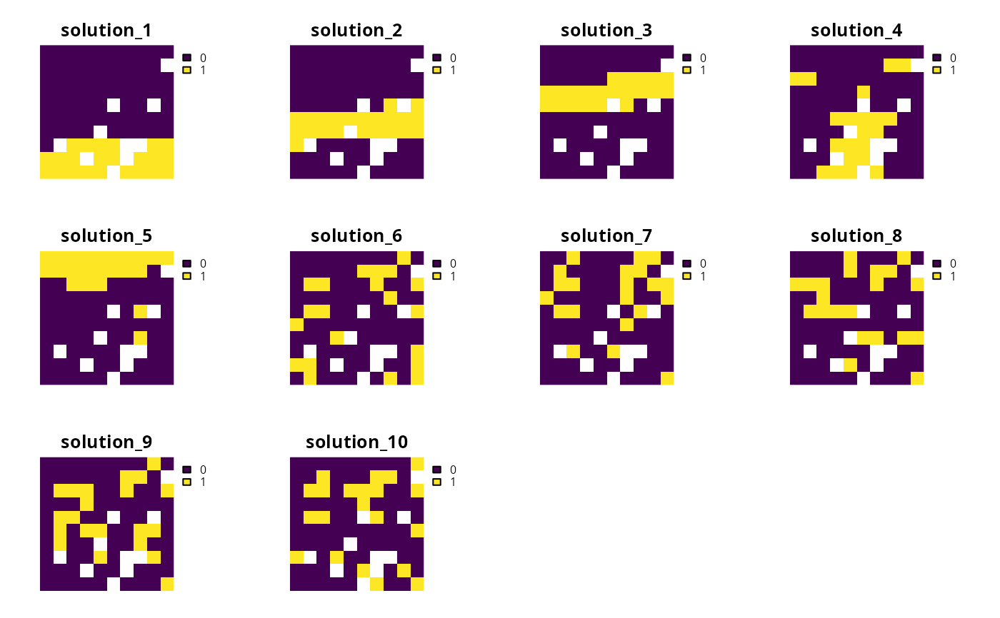
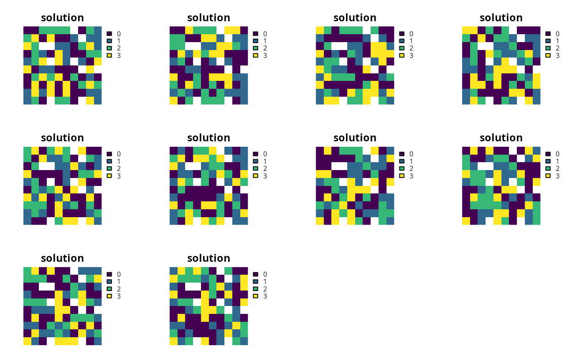

Generate a portfolio of solutions for a conservation planning
problem using Bender's cuts (discussed in Rodrigues
et al. 2000).
add_cuts_portfolio(x, number_solutions = 10L)
| x |
|
|---|---|
| number_solutions |
|
ConservationProblem-class object with the portfolio
added to it.
This strategy for generating a portfolio of solutions involves solving the problem multiple times and adding additional constraints to forbid previously obtained solutions. In general, this strategy is most useful when problems take a long time to solve and benefit from having multiple threads allocated for solving an individual problem.
Rodrigues AS, Cerdeira OJ, and Gaston KJ (2000) Flexibility, efficiency, and accountability: adapting reserve selection algorithms to more complex conservation problems. Ecography, 23: 565--574.
# set seed for reproducibility set.seed(500) # load data data(sim_pu_raster, sim_features, sim_pu_zones_stack, sim_features_zones) # create minimal problem with cuts portfolio p1 <- problem(sim_pu_raster, sim_features) %>% add_min_set_objective() %>% add_relative_targets(0.2) %>% add_cuts_portfolio(10) %>% add_default_solver(gap = 0.2, verbose = FALSE)# solve problem and generate 10 solutions within 20 % of optimality s1 <- solve(p1)#> Optimize a model with 5 rows, 90 columns and 450 nonzeros #> Variable types: 0 continuous, 90 integer (90 binary) #> Coefficient statistics: #> Matrix range [2e-01, 9e-01] #> Objective range [2e+02, 2e+02] #> Bounds range [1e+00, 1e+00] #> RHS range [6e+00, 2e+01] #> Found heuristic solution: objective 4750.1073492 #> Presolve time: 0.00s #> Presolved: 5 rows, 90 columns, 450 nonzeros #> Variable types: 0 continuous, 90 integer (90 binary) #> Presolved: 5 rows, 90 columns, 450 nonzeros #> #> #> Root relaxation: objective 3.891498e+03, 16 iterations, 0.00 seconds #> #> Nodes | Current Node | Objective Bounds | Work #> Expl Unexpl | Obj Depth IntInf | Incumbent BestBd Gap | It/Node Time #> #> 0 0 3891.49802 0 4 4750.10735 3891.49802 18.1% - 0s #> #> Explored 1 nodes (16 simplex iterations) in 0.00 seconds #> Thread count was 1 (of 4 available processors) #> #> Solution count 1: 4750.11 #> #> Optimal solution found (tolerance 2.00e-01) #> Best objective 4.750107349221e+03, best bound 3.891498019516e+03, gap 18.0756% #> Warning for adding variables: zero or small (< 1e-13) coefficients, ignored #> Optimize a model with 6 rows, 90 columns and 474 nonzeros #> Variable types: 0 continuous, 90 integer (90 binary) #> Coefficient statistics: #> Matrix range [2e-01, 2e+00] #> Objective range [2e+02, 2e+02] #> Bounds range [1e+00, 1e+00] #> RHS range [6e+00, 2e+01] #> Found heuristic solution: objective 4278.2640965 #> Presolve time: 0.00s #> Presolved: 6 rows, 90 columns, 474 nonzeros #> Variable types: 0 continuous, 90 integer (90 binary) #> Presolved: 6 rows, 90 columns, 474 nonzeros #> #> #> Root relaxation: objective 3.894780e+03, 23 iterations, 0.00 seconds #> #> Nodes | Current Node | Objective Bounds | Work #> Expl Unexpl | Obj Depth IntInf | Incumbent BestBd Gap | It/Node Time #> #> 0 0 3894.78008 0 5 4278.26410 3894.78008 8.96% - 0s #> #> Explored 1 nodes (23 simplex iterations) in 0.00 seconds #> Thread count was 1 (of 4 available processors) #> #> Solution count 1: 4278.26 #> #> Optimal solution found (tolerance 2.00e-01) #> Best objective 4.278264096491e+03, best bound 3.894780082996e+03, gap 8.9635% #> Warning for adding variables: zero or small (< 1e-13) coefficients, ignored #> Optimize a model with 7 rows, 90 columns and 495 nonzeros #> Variable types: 0 continuous, 90 integer (90 binary) #> Coefficient statistics: #> Matrix range [2e-01, 2e+00] #> Objective range [2e+02, 2e+02] #> Bounds range [1e+00, 1e+00] #> RHS range [6e+00, 2e+01] #> Found heuristic solution: objective 4388.0147901 #> Presolve time: 0.00s #> Presolved: 7 rows, 90 columns, 495 nonzeros #> Variable types: 0 continuous, 90 integer (90 binary) #> Presolved: 7 rows, 90 columns, 495 nonzeros #> #> #> Root relaxation: objective 3.894780e+03, 23 iterations, 0.00 seconds #> #> Nodes | Current Node | Objective Bounds | Work #> Expl Unexpl | Obj Depth IntInf | Incumbent BestBd Gap | It/Node Time #> #> 0 0 3894.78008 0 5 4388.01479 3894.78008 11.2% - 0s #> #> Explored 1 nodes (23 simplex iterations) in 0.00 seconds #> Thread count was 1 (of 4 available processors) #> #> Solution count 1: 4388.01 #> #> Optimal solution found (tolerance 2.00e-01) #> Best objective 4.388014790107e+03, best bound 3.894780082996e+03, gap 11.2405% #> Warning for adding variables: zero or small (< 1e-13) coefficients, ignored #> Optimize a model with 8 rows, 90 columns and 516 nonzeros #> Variable types: 0 continuous, 90 integer (90 binary) #> Coefficient statistics: #> Matrix range [2e-01, 2e+00] #> Objective range [2e+02, 2e+02] #> Bounds range [1e+00, 1e+00] #> RHS range [6e+00, 2e+01] #> Found heuristic solution: objective 5070.8107563 #> Presolve time: 0.00s #> Presolved: 8 rows, 90 columns, 516 nonzeros #> Variable types: 0 continuous, 90 integer (90 binary) #> Presolved: 8 rows, 90 columns, 516 nonzeros #> #> #> Root relaxation: objective 3.894780e+03, 23 iterations, 0.00 seconds #> #> Nodes | Current Node | Objective Bounds | Work #> Expl Unexpl | Obj Depth IntInf | Incumbent BestBd Gap | It/Node Time #> #> 0 0 3894.78008 0 5 5070.81076 3894.78008 23.2% - 0s #> H 0 0 4001.8154680 3894.78008 2.67% - 0s #> #> Explored 1 nodes (23 simplex iterations) in 0.00 seconds #> Thread count was 1 (of 4 available processors) #> #> Solution count 2: 4001.82 5070.81 #> #> Optimal solution found (tolerance 2.00e-01) #> Best objective 4.001815468006e+03, best bound 3.894780082996e+03, gap 2.6747% #> Warning for adding variables: zero or small (< 1e-13) coefficients, ignored #> Optimize a model with 9 rows, 90 columns and 536 nonzeros #> Variable types: 0 continuous, 90 integer (90 binary) #> Coefficient statistics: #> Matrix range [2e-01, 2e+00] #> Objective range [2e+02, 2e+02] #> Bounds range [1e+00, 1e+00] #> RHS range [6e+00, 2e+01] #> Found heuristic solution: objective 4821.9182272 #> Presolve time: 0.00s #> Presolved: 9 rows, 90 columns, 536 nonzeros #> Variable types: 0 continuous, 90 integer (90 binary) #> Presolved: 9 rows, 90 columns, 536 nonzeros #> #> #> Root relaxation: objective 3.909416e+03, 31 iterations, 0.00 seconds #> #> Nodes | Current Node | Objective Bounds | Work #> Expl Unexpl | Obj Depth IntInf | Incumbent BestBd Gap | It/Node Time #> #> 0 0 3909.41572 0 6 4821.91823 3909.41572 18.9% - 0s #> #> Explored 1 nodes (31 simplex iterations) in 0.00 seconds #> Thread count was 1 (of 4 available processors) #> #> Solution count 1: 4821.92 #> #> Optimal solution found (tolerance 2.00e-01) #> Best objective 4.821918227188e+03, best bound 3.909415723977e+03, gap 18.9241% #> Warning for adding variables: zero or small (< 1e-13) coefficients, ignored #> Optimize a model with 10 rows, 90 columns and 559 nonzeros #> Variable types: 0 continuous, 90 integer (90 binary) #> Coefficient statistics: #> Matrix range [2e-01, 2e+00] #> Objective range [2e+02, 2e+02] #> Bounds range [1e+00, 1e+00] #> RHS range [6e+00, 2e+01] #> Found heuristic solution: objective 4319.5008724 #> Presolve time: 0.00s #> Presolved: 10 rows, 90 columns, 559 nonzeros #> Variable types: 0 continuous, 90 integer (90 binary) #> Presolved: 10 rows, 90 columns, 559 nonzeros #> #> #> Root relaxation: objective 3.909416e+03, 31 iterations, 0.00 seconds #> #> Nodes | Current Node | Objective Bounds | Work #> Expl Unexpl | Obj Depth IntInf | Incumbent BestBd Gap | It/Node Time #> #> 0 0 3909.41572 0 6 4319.50087 3909.41572 9.49% - 0s #> #> Explored 1 nodes (31 simplex iterations) in 0.00 seconds #> Thread count was 1 (of 4 available processors) #> #> Solution count 1: 4319.5 #> #> Optimal solution found (tolerance 2.00e-01) #> Best objective 4.319500872416e+03, best bound 3.909415723977e+03, gap 9.4938% #> Warning for adding variables: zero or small (< 1e-13) coefficients, ignored #> Optimize a model with 11 rows, 90 columns and 580 nonzeros #> Variable types: 0 continuous, 90 integer (90 binary) #> Coefficient statistics: #> Matrix range [2e-01, 2e+00] #> Objective range [2e+02, 2e+02] #> Bounds range [1e+00, 1e+00] #> RHS range [6e+00, 2e+01] #> Found heuristic solution: objective 4319.5580049 #> Presolve time: 0.00s #> Presolved: 11 rows, 90 columns, 580 nonzeros #> Variable types: 0 continuous, 90 integer (90 binary) #> Presolved: 11 rows, 90 columns, 580 nonzeros #> #> #> Root relaxation: objective 3.909416e+03, 31 iterations, 0.00 seconds #> #> Nodes | Current Node | Objective Bounds | Work #> Expl Unexpl | Obj Depth IntInf | Incumbent BestBd Gap | It/Node Time #> #> 0 0 3909.41572 0 6 4319.55800 3909.41572 9.50% - 0s #> #> Explored 1 nodes (31 simplex iterations) in 0.00 seconds #> Thread count was 1 (of 4 available processors) #> #> Solution count 1: 4319.56 #> #> Optimal solution found (tolerance 2.00e-01) #> Best objective 4.319558004875e+03, best bound 3.909415723977e+03, gap 9.4950% #> Warning for adding variables: zero or small (< 1e-13) coefficients, ignored #> Optimize a model with 12 rows, 90 columns and 601 nonzeros #> Variable types: 0 continuous, 90 integer (90 binary) #> Coefficient statistics: #> Matrix range [2e-01, 2e+00] #> Objective range [2e+02, 2e+02] #> Bounds range [1e+00, 1e+00] #> RHS range [6e+00, 2e+01] #> Found heuristic solution: objective 4357.2126517 #> Presolve time: 0.00s #> Presolved: 12 rows, 90 columns, 601 nonzeros #> Variable types: 0 continuous, 90 integer (90 binary) #> Presolved: 12 rows, 90 columns, 601 nonzeros #> #> #> Root relaxation: objective 3.909416e+03, 31 iterations, 0.00 seconds #> #> Nodes | Current Node | Objective Bounds | Work #> Expl Unexpl | Obj Depth IntInf | Incumbent BestBd Gap | It/Node Time #> #> 0 0 3909.41572 0 6 4357.21265 3909.41572 10.3% - 0s #> #> Explored 1 nodes (31 simplex iterations) in 0.00 seconds #> Thread count was 1 (of 4 available processors) #> #> Solution count 1: 4357.21 #> #> Optimal solution found (tolerance 2.00e-01) #> Best objective 4.357212651709e+03, best bound 3.909415723977e+03, gap 10.2771% #> Warning for adding variables: zero or small (< 1e-13) coefficients, ignored #> Optimize a model with 13 rows, 90 columns and 622 nonzeros #> Variable types: 0 continuous, 90 integer (90 binary) #> Coefficient statistics: #> Matrix range [2e-01, 2e+00] #> Objective range [2e+02, 2e+02] #> Bounds range [1e+00, 1e+00] #> RHS range [6e+00, 2e+01] #> Found heuristic solution: objective 4357.5252389 #> Presolve time: 0.00s #> Presolved: 13 rows, 90 columns, 622 nonzeros #> Variable types: 0 continuous, 90 integer (90 binary) #> Presolved: 13 rows, 90 columns, 622 nonzeros #> #> #> Root relaxation: objective 3.909416e+03, 31 iterations, 0.00 seconds #> #> Nodes | Current Node | Objective Bounds | Work #> Expl Unexpl | Obj Depth IntInf | Incumbent BestBd Gap | It/Node Time #> #> 0 0 3909.41572 0 6 4357.52524 3909.41572 10.3% - 0s #> #> Explored 1 nodes (31 simplex iterations) in 0.00 seconds #> Thread count was 1 (of 4 available processors) #> #> Solution count 1: 4357.53 #> #> Optimal solution found (tolerance 2.00e-01) #> Best objective 4.357525238904e+03, best bound 3.909415723977e+03, gap 10.2836% #> Warning for adding variables: zero or small (< 1e-13) coefficients, ignored #> Optimize a model with 14 rows, 90 columns and 643 nonzeros #> Variable types: 0 continuous, 90 integer (90 binary) #> Coefficient statistics: #> Matrix range [2e-01, 2e+00] #> Objective range [2e+02, 2e+02] #> Bounds range [1e+00, 1e+00] #> RHS range [6e+00, 2e+01] #> Found heuristic solution: objective 4334.4157937 #> Presolve time: 0.00s #> Presolved: 14 rows, 90 columns, 643 nonzeros #> Variable types: 0 continuous, 90 integer (90 binary) #> Presolved: 14 rows, 90 columns, 643 nonzeros #> #> #> Root relaxation: objective 3.909416e+03, 31 iterations, 0.00 seconds #> #> Nodes | Current Node | Objective Bounds | Work #> Expl Unexpl | Obj Depth IntInf | Incumbent BestBd Gap | It/Node Time #> #> 0 0 3909.41572 0 6 4334.41579 3909.41572 9.81% - 0s #> #> Explored 1 nodes (31 simplex iterations) in 0.00 seconds #> Thread count was 1 (of 4 available processors) #> #> Solution count 1: 4334.42 #> #> Optimal solution found (tolerance 2.00e-01) #> Best objective 4.334415793680e+03, best bound 3.909415723977e+03, gap 9.8052%# plot solution plot(stack(s1), axes = FALSE, box = FALSE)# build multi-zone conservation problem with cuts portfolio p2 <- problem(sim_pu_zones_stack, sim_features_zones) %>% add_min_set_objective() %>% add_relative_targets(matrix(runif(15, 0.1, 0.2), nrow = 5, ncol = 3)) %>% add_binary_decisions() %>% add_cuts_portfolio(10) %>% add_default_solver(gap = 0.2, verbose = FALSE)# solve the problem s2 <- solve(p2)#> Optimize a model with 105 rows, 270 columns and 1620 nonzeros #> Variable types: 0 continuous, 270 integer (270 binary) #> Coefficient statistics: #> Matrix range [2e-01, 1e+00] #> Objective range [2e+02, 2e+02] #> Bounds range [1e+00, 1e+00] #> RHS range [1e+00, 2e+01] #> Found heuristic solution: objective 12406.438131 #> Presolve removed 4 rows and 0 columns #> Presolve time: 0.00s #> Presolved: 101 rows, 270 columns, 1260 nonzeros #> Variable types: 0 continuous, 270 integer (270 binary) #> Presolved: 101 rows, 270 columns, 1260 nonzeros #> #> #> Root relaxation: objective 1.089584e+04, 93 iterations, 0.00 seconds #> #> Nodes | Current Node | Objective Bounds | Work #> Expl Unexpl | Obj Depth IntInf | Incumbent BestBd Gap | It/Node Time #> #> 0 0 10895.8449 0 11 12406.4381 10895.8449 12.2% - 0s #> #> Explored 1 nodes (93 simplex iterations) in 0.01 seconds #> Thread count was 1 (of 4 available processors) #> #> Solution count 1: 12406.4 #> #> Optimal solution found (tolerance 2.00e-01) #> Best objective 1.240643813069e+04, best bound 1.089584492967e+04, gap 12.1759% #> Warning for adding variables: zero or small (< 1e-13) coefficients, ignored #> Optimize a model with 106 rows, 270 columns and 1680 nonzeros #> Variable types: 0 continuous, 270 integer (270 binary) #> Coefficient statistics: #> Matrix range [2e-01, 2e+00] #> Objective range [2e+02, 2e+02] #> Bounds range [1e+00, 1e+00] #> RHS range [1e+00, 6e+01] #> Found heuristic solution: objective 12357.626764 #> Presolve removed 4 rows and 0 columns #> Presolve time: 0.00s #> Presolved: 102 rows, 270 columns, 1320 nonzeros #> Variable types: 0 continuous, 270 integer (270 binary) #> Presolved: 102 rows, 270 columns, 1320 nonzeros #> #> #> Root relaxation: objective 1.089584e+04, 87 iterations, 0.00 seconds #> #> Nodes | Current Node | Objective Bounds | Work #> Expl Unexpl | Obj Depth IntInf | Incumbent BestBd Gap | It/Node Time #> #> 0 0 10895.8449 0 11 12357.6268 10895.8449 11.8% - 0s #> #> Explored 1 nodes (87 simplex iterations) in 0.01 seconds #> Thread count was 1 (of 4 available processors) #> #> Solution count 1: 12357.6 #> #> Optimal solution found (tolerance 2.00e-01) #> Best objective 1.235762676437e+04, best bound 1.089584492967e+04, gap 11.8290% #> Warning for adding variables: zero or small (< 1e-13) coefficients, ignored #> Optimize a model with 107 rows, 270 columns and 1740 nonzeros #> Variable types: 0 continuous, 270 integer (270 binary) #> Coefficient statistics: #> Matrix range [2e-01, 2e+00] #> Objective range [2e+02, 2e+02] #> Bounds range [1e+00, 1e+00] #> RHS range [1e+00, 6e+01] #> Found heuristic solution: objective 12430.656768 #> Presolve removed 4 rows and 0 columns #> Presolve time: 0.00s #> Presolved: 103 rows, 270 columns, 1380 nonzeros #> Variable types: 0 continuous, 270 integer (270 binary) #> Presolved: 103 rows, 270 columns, 1380 nonzeros #> #> #> Root relaxation: objective 1.089584e+04, 90 iterations, 0.00 seconds #> #> Nodes | Current Node | Objective Bounds | Work #> Expl Unexpl | Obj Depth IntInf | Incumbent BestBd Gap | It/Node Time #> #> 0 0 10895.8449 0 11 12430.6568 10895.8449 12.3% - 0s #> #> Explored 1 nodes (90 simplex iterations) in 0.01 seconds #> Thread count was 1 (of 4 available processors) #> #> Solution count 1: 12430.7 #> #> Optimal solution found (tolerance 2.00e-01) #> Best objective 1.243065676796e+04, best bound 1.089584492967e+04, gap 12.3470% #> Warning for adding variables: zero or small (< 1e-13) coefficients, ignored #> Optimize a model with 108 rows, 270 columns and 1800 nonzeros #> Variable types: 0 continuous, 270 integer (270 binary) #> Coefficient statistics: #> Matrix range [2e-01, 2e+00] #> Objective range [2e+02, 2e+02] #> Bounds range [1e+00, 1e+00] #> RHS range [1e+00, 6e+01] #> Found heuristic solution: objective 12129.222626 #> Presolve removed 4 rows and 0 columns #> Presolve time: 0.00s #> Presolved: 104 rows, 270 columns, 1440 nonzeros #> Variable types: 0 continuous, 270 integer (270 binary) #> Presolved: 104 rows, 270 columns, 1440 nonzeros #> #> #> Root relaxation: objective 1.089584e+04, 102 iterations, 0.00 seconds #> #> Nodes | Current Node | Objective Bounds | Work #> Expl Unexpl | Obj Depth IntInf | Incumbent BestBd Gap | It/Node Time #> #> 0 0 10895.8449 0 11 12129.2226 10895.8449 10.2% - 0s #> #> Explored 1 nodes (102 simplex iterations) in 0.01 seconds #> Thread count was 1 (of 4 available processors) #> #> Solution count 1: 12129.2 #> #> Optimal solution found (tolerance 2.00e-01) #> Best objective 1.212922262577e+04, best bound 1.089584492967e+04, gap 10.1686% #> Warning for adding variables: zero or small (< 1e-13) coefficients, ignored #> Optimize a model with 109 rows, 270 columns and 1859 nonzeros #> Variable types: 0 continuous, 270 integer (270 binary) #> Coefficient statistics: #> Matrix range [2e-01, 2e+00] #> Objective range [2e+02, 2e+02] #> Bounds range [1e+00, 1e+00] #> RHS range [1e+00, 6e+01] #> Found heuristic solution: objective 12069.529680 #> Presolve removed 4 rows and 0 columns #> Presolve time: 0.00s #> Presolved: 105 rows, 270 columns, 1499 nonzeros #> Variable types: 0 continuous, 270 integer (270 binary) #> Presolved: 105 rows, 270 columns, 1499 nonzeros #> #> #> Root relaxation: objective 1.089584e+04, 95 iterations, 0.00 seconds #> #> Nodes | Current Node | Objective Bounds | Work #> Expl Unexpl | Obj Depth IntInf | Incumbent BestBd Gap | It/Node Time #> #> 0 0 10895.8449 0 11 12069.5297 10895.8449 9.72% - 0s #> #> Explored 1 nodes (95 simplex iterations) in 0.01 seconds #> Thread count was 1 (of 4 available processors) #> #> Solution count 1: 12069.5 #> #> Optimal solution found (tolerance 2.00e-01) #> Best objective 1.206952967991e+04, best bound 1.089584492967e+04, gap 9.7244% #> Warning for adding variables: zero or small (< 1e-13) coefficients, ignored #> Optimize a model with 110 rows, 270 columns and 1917 nonzeros #> Variable types: 0 continuous, 270 integer (270 binary) #> Coefficient statistics: #> Matrix range [2e-01, 2e+00] #> Objective range [2e+02, 2e+02] #> Bounds range [1e+00, 1e+00] #> RHS range [1e+00, 6e+01] #> Found heuristic solution: objective 12092.280405 #> Presolve removed 4 rows and 0 columns #> Presolve time: 0.00s #> Presolved: 106 rows, 270 columns, 1557 nonzeros #> Variable types: 0 continuous, 270 integer (270 binary) #> Presolved: 106 rows, 270 columns, 1557 nonzeros #> #> #> Root relaxation: objective 1.089584e+04, 97 iterations, 0.00 seconds #> #> Nodes | Current Node | Objective Bounds | Work #> Expl Unexpl | Obj Depth IntInf | Incumbent BestBd Gap | It/Node Time #> #> 0 0 10895.8449 0 11 12092.2804 10895.8449 9.89% - 0s #> #> Explored 1 nodes (97 simplex iterations) in 0.01 seconds #> Thread count was 1 (of 4 available processors) #> #> Solution count 1: 12092.3 #> #> Optimal solution found (tolerance 2.00e-01) #> Best objective 1.209228040476e+04, best bound 1.089584492967e+04, gap 9.8942% #> Warning for adding variables: zero or small (< 1e-13) coefficients, ignored #> Optimize a model with 111 rows, 270 columns and 1975 nonzeros #> Variable types: 0 continuous, 270 integer (270 binary) #> Coefficient statistics: #> Matrix range [2e-01, 2e+00] #> Objective range [2e+02, 2e+02] #> Bounds range [1e+00, 1e+00] #> RHS range [1e+00, 6e+01] #> Found heuristic solution: objective 12688.568669 #> Presolve removed 4 rows and 0 columns #> Presolve time: 0.00s #> Presolved: 107 rows, 270 columns, 1615 nonzeros #> Variable types: 0 continuous, 270 integer (270 binary) #> Presolved: 107 rows, 270 columns, 1615 nonzeros #> #> #> Root relaxation: objective 1.089584e+04, 108 iterations, 0.00 seconds #> #> Nodes | Current Node | Objective Bounds | Work #> Expl Unexpl | Obj Depth IntInf | Incumbent BestBd Gap | It/Node Time #> #> 0 0 10895.8449 0 11 12688.5687 10895.8449 14.1% - 0s #> #> Explored 1 nodes (108 simplex iterations) in 0.01 seconds #> Thread count was 1 (of 4 available processors) #> #> Solution count 1: 12688.6 #> #> Optimal solution found (tolerance 2.00e-01) #> Best objective 1.268856866853e+04, best bound 1.089584492967e+04, gap 14.1287% #> Warning for adding variables: zero or small (< 1e-13) coefficients, ignored #> Optimize a model with 112 rows, 270 columns and 2036 nonzeros #> Variable types: 0 continuous, 270 integer (270 binary) #> Coefficient statistics: #> Matrix range [2e-01, 2e+00] #> Objective range [2e+02, 2e+02] #> Bounds range [1e+00, 1e+00] #> RHS range [1e+00, 6e+01] #> Found heuristic solution: objective 12207.931039 #> Presolve removed 4 rows and 0 columns #> Presolve time: 0.00s #> Presolved: 108 rows, 270 columns, 1676 nonzeros #> Variable types: 0 continuous, 270 integer (270 binary) #> Presolved: 108 rows, 270 columns, 1676 nonzeros #> #> #> Root relaxation: objective 1.089584e+04, 102 iterations, 0.00 seconds #> #> Nodes | Current Node | Objective Bounds | Work #> Expl Unexpl | Obj Depth IntInf | Incumbent BestBd Gap | It/Node Time #> #> 0 0 10895.8449 0 11 12207.9310 10895.8449 10.7% - 0s #> #> Explored 1 nodes (102 simplex iterations) in 0.01 seconds #> Thread count was 1 (of 4 available processors) #> #> Solution count 1: 12207.9 #> #> Optimal solution found (tolerance 2.00e-01) #> Best objective 1.220793103854e+04, best bound 1.089584492967e+04, gap 10.7478% #> Warning for adding variables: zero or small (< 1e-13) coefficients, ignored #> Optimize a model with 113 rows, 270 columns and 2095 nonzeros #> Variable types: 0 continuous, 270 integer (270 binary) #> Coefficient statistics: #> Matrix range [2e-01, 2e+00] #> Objective range [2e+02, 2e+02] #> Bounds range [1e+00, 1e+00] #> RHS range [1e+00, 6e+01] #> Found heuristic solution: objective 11967.294075 #> Presolve removed 4 rows and 0 columns #> Presolve time: 0.00s #> Presolved: 109 rows, 270 columns, 1735 nonzeros #> Variable types: 0 continuous, 270 integer (270 binary) #> Presolved: 109 rows, 270 columns, 1735 nonzeros #> #> #> Root relaxation: objective 1.089584e+04, 99 iterations, 0.00 seconds #> #> Nodes | Current Node | Objective Bounds | Work #> Expl Unexpl | Obj Depth IntInf | Incumbent BestBd Gap | It/Node Time #> #> 0 0 10895.8449 0 11 11967.2941 10895.8449 8.95% - 0s #> #> Explored 1 nodes (99 simplex iterations) in 0.01 seconds #> Thread count was 1 (of 4 available processors) #> #> Solution count 1: 11967.3 #> #> Optimal solution found (tolerance 2.00e-01) #> Best objective 1.196729407477e+04, best bound 1.089584492967e+04, gap 8.9531% #> Warning for adding variables: zero or small (< 1e-13) coefficients, ignored #> Optimize a model with 114 rows, 270 columns and 2153 nonzeros #> Variable types: 0 continuous, 270 integer (270 binary) #> Coefficient statistics: #> Matrix range [2e-01, 2e+00] #> Objective range [2e+02, 2e+02] #> Bounds range [1e+00, 1e+00] #> RHS range [1e+00, 6e+01] #> Found heuristic solution: objective 12036.692122 #> Presolve removed 4 rows and 0 columns #> Presolve time: 0.00s #> Presolved: 110 rows, 270 columns, 1793 nonzeros #> Variable types: 0 continuous, 270 integer (270 binary) #> Presolved: 110 rows, 270 columns, 1793 nonzeros #> #> #> Root relaxation: objective 1.089584e+04, 117 iterations, 0.00 seconds #> #> Nodes | Current Node | Objective Bounds | Work #> Expl Unexpl | Obj Depth IntInf | Incumbent BestBd Gap | It/Node Time #> #> 0 0 10895.8449 0 11 12036.6921 10895.8449 9.48% - 0s #> #> Explored 1 nodes (117 simplex iterations) in 0.01 seconds #> Thread count was 1 (of 4 available processors) #> #> Solution count 1: 12036.7 #> #> Optimal solution found (tolerance 2.00e-01) #> Best objective 1.203669212207e+04, best bound 1.089584492967e+04, gap 9.4781%# print solution str(s2, max.level = 1)#> List of 10 #> $ solution_1 :Formal class 'RasterStack' [package "raster"] with 11 slots #> $ solution_2 :Formal class 'RasterStack' [package "raster"] with 11 slots #> $ solution_3 :Formal class 'RasterStack' [package "raster"] with 11 slots #> $ solution_4 :Formal class 'RasterStack' [package "raster"] with 11 slots #> $ solution_5 :Formal class 'RasterStack' [package "raster"] with 11 slots #> $ solution_6 :Formal class 'RasterStack' [package "raster"] with 11 slots #> $ solution_7 :Formal class 'RasterStack' [package "raster"] with 11 slots #> $ solution_8 :Formal class 'RasterStack' [package "raster"] with 11 slots #> $ solution_9 :Formal class 'RasterStack' [package "raster"] with 11 slots #> $ solution_10:Formal class 'RasterStack' [package "raster"] with 11 slots #> - attr(*, "objective")= Named num [1:10] 12406 12358 12431 12129 12070 ... #> ..- attr(*, "names")= chr [1:10] "solution_1" "solution_2" "solution_3" "solution_4" ... #> - attr(*, "status")= Named chr [1:10] "OPTIMAL" "OPTIMAL" "OPTIMAL" "OPTIMAL" ... #> ..- attr(*, "names")= chr [1:10] "solution_1" "solution_2" "solution_3" "solution_4" ... #> - attr(*, "runtime")= Named num [1:10] 0.00599 0.00659 0.006 0.00644 0.00627 ... #> ..- attr(*, "names")= chr [1:10] "solution_1" "solution_2" "solution_3" "solution_4" ...# plot first solution in portfolio plot(category_layer(s2[[1]]), main = "solution", axes = FALSE, box = FALSE)